Standard Simulation Entities
In ESL-Studio, simulation entities are represented by graphical objects (icons) that may be placed on a simulation block diagram and may be connected up with signal lines.
These are available from the Elements pane, in the form of a classified tree view.
This webpage covers the standard set of simulation entities provided in ESL-Studio with the order and classified as in the standard Elements pane tree view.
Common Elements
Linear Operators
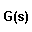
Transfer FunctionSpecifies a Laplace Transfer Function (generates an ESL TRANSFER statement or an equivalent set of differential equations).
Special Transfer Function Attributes: Transfer Function, Initial Conditions, Differential Equations.
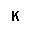
Constant MultiplierMultiplies input by a constant (y = K * x).
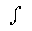
IntegratorIntegral of input with respect to time.
Note: This simulation entity is in two sections in the Elements tree view: Common Elements | Linear Operators and Library (Linear) | Integrators.
Arithmetic Operators
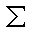
SummerSum of two signed inputs (x + y).
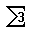
Summer 3Sum of three signed inputs (x + y + z).
Multiplier
Product of signed inputs (x * y).
Divider
Quotient of signed inputs (x / y).
Logical Operators
Logical Negation
Logical NOT (negation) of input.
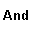
Logical AndLogical AND (conjunction) of two inputs.
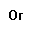
Logical OrLogical OR (disjunction) of two inputs.
Standard Functions
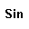
SineSine of input in radians.
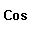
CosineCosine of input in radians.
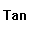
TangentTangent of input in radians.
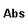
AbsoluteAbsolute value of input.
This is the modelling version of the standard function which treats
changes in output as discontinuities (uses Library submodel ABSX).
Arc Sine
Arcsine of input.
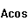
Arc CosineArccosine of input.
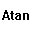
Arc TangentArctangent of input.
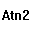
Arc Tangent 2Arctangent of two inputs (x / y).
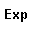
ExponentialExponential of input (e ** x).
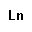
Natural LogarithmNatural logarithm of input.
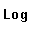
Base 10 LogarithmLogarithm to base 10 of input.
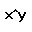
PowerRaises first input to value of second input (exponentiation) (x ** y).
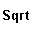
Square RootSquare root of absolute value of real input (uses Library submodel SQRTX).
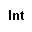
IntegerOutput is the integer value of real input.
This is the modelling version of the standard function which treats
changes in output as discontinuities (uses Library submodel INTX).
Input/Output
Inputs
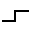
Step InputGenerates a step function (includes Library submodel STEPP).
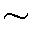
Sine InputGenerates a sine wave of specified amplitude, frequency, and phase.
Ramp Input
Generates a ramp of unit slope after optional initial time delay (uses Library submodel RAMP).
Square Input
Generates a square wave of specified amplitude, M/S ratio, period, and initial time-delay (includes Library submodel MODULT).
Time Input
Simulation time (T).
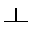
Impulse InputGenerates a periodic train of impulses with a controlled delay before the first pulse (uses Library submodel IMPUL).
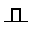
Pulse InputGenerates a unit pulse of specified duration (uses Library submodel PULSE).
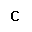
Constant RealREAL constant value.
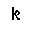
Constant IntegerINTEGER constant value.
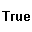
Constant TrueLOGICAL constant with value TRUE.
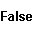
Constant FalseLOGICAL constant with value FALSE.
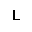
Constant LogicalLOGICAL constant value determined by attribute.
Input Arguments
Special Argument Attributes: Arg Name, Arg Description, Dimensions, Attribute.
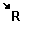
Real InputREAL input value to a diagram subprogram (submodel or segment).
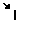
Integer InputINTEGER input value to a diagram subprogram (submodel or segment).
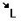
Logical InputLOGICAL input value to a diagram subprogram (submodel or segment).
Output Arguments
Special Argument Attributes: Arg Name, Arg Description, Dimensions.
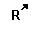
Real OutputREAL output value from a diagram subprogram (submodel or segment).
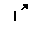
Integer OutputINTEGER output value from a diagram subprogram (submodel or segment).
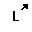
Logical OutputLOGICAL output value from a diagram subprogram (submodel or segment).
Library (Linear)
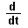
DerivativeFirst-order derivative (uses Library submodel DERIV).
Laplace Operators
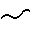
Complex PoleSecond order lag (uses Library submodel CMPXPL).
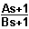
Lead LagLead-lag transfer function (uses Library submodel LEDLAG).
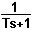
Real PoleFirst order lag (uses Library submodel REALPL).
Integrators
Integrator
Integral of input with respect to time.
Note: This simulation entity is in two sections in the Elements tree view: Common Elements | Linear Operators and Library (Linear) | Integrators.
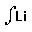
Limited IntegratorIntegrator in which output is bounded between lower and upper limits (uses Library submodel LIMINT).
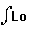
Logical IntegratorLogically controlled integrator - the integrator's mode of operation is controlled by logical input signals (uses Library submodel LOGINT).
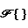
Fourier TransformFourier integrator
Calculates the rms magnitude and angle of a specified harmonic
component of the Fourier series for an input signal.
Prints stats at the end of each cycle (uses Library submodel FOURINT).
Controllers
PI Controller
Proportional plus integral (PI) controller (uses Library submodel PICONT).
PID Controller
Three term (PID) controller with limited output and integral anti-windup (uses Library submodel PIDCONT).
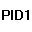
PID Controller 1Three term (PID) controller with limited output, anti-windup and deadspace (uses Library submodel PIDCONT1).
Timers
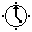
TimerMeasures the simulation time which has elapsed since it was reset by a logical input (uses Library submodel TIMER).
Library (Nonlinear)
Oscillators
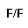
BistableBistable storage device - stores logical input as the clock input becomes TRUE (uses Library submodel BISTBL).
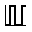
ModulatorPulse width modulator - generates a periodic logical pulse train with the mark/space ratio being controlled by an input variable and an optional time delay before the first transition (uses Library submodel MODULT).
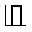
MonostableOutput set TRUE when input becomes positive and remains set for at least a time period specified by attribute, or until the input variable becomes negative (uses Library submodel MONO).
Comparators
Comparator
Logical output true if inputs (x >= y).
Backlash
Comparator with backlash - logical output becomes TRUE when input x greater than or equal to upper limit and FALSE when less than lower limit (uses Library submodel COMPB).
Digitisers
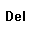
DelayPeriodically samples a continuous input signal and delays output of the sampled signal for a fixed period of time, for example a pipeline delay (uses Library submodel DELAY).
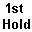
First Order HoldPeriodically samples a continuous input signal and produces an output of the last sample modified with a slope calculated by the previous two samples (uses Library submodel FHOLD).
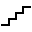
QuantizerQuantizes a continuous input signal into values which are integer multiples of a specified quantization value (uses Library submodel QNTZR).
Sample and Hold
Periodically samples a continuous input signal and outputs the value at the last sampling point (uses Library submodel SAMHLD).
Zero Order Hold
Output holds value of x input when hold input becomes TRUE.
While hold is FALSE output is equal to input (uses Library submodel ZHOLD).
Limiters
Deadspace
Simulates the effect of a 'deadspace'.
Output y = 0.0, if LL < x < UL; y = x-UL, if x >= UL; y = x-LL,
if x <= LL (uses Library submodel DEADSP).
Hysteresis
Implements a pure hysteresis or backlash function (uses Library submodel HSTRSS).
Limiter
The output follows the input provided the input remains between lower
and upper limits.
The output is held at a limit if the input goes outside the limits
(uses Library submodel LIMIT).
Misc
Rectifier
The operation of a Silicon Controlled Rectifier (SCR) is represented for given inputs of current, voltage and gate pulse (uses Library submodel RECT).
Friction
Determines the friction between sliding surfaces from applied force and relative velocity (uses Library submodel COULOMB).
Switch
Switch between two REAL inputs depending on LOGICAL control input.
Function Generator
Generates function values from a one-, two- or three- dimension table (uses Library submodel FG3D).
Subprogram Calls
Submodel Call
Calls a submodel.
Special attribute: Submodel.
Attributes and Ports are determined by the Submodel arguments.
Segment Call
Calls a segment.
Special attribute: Segment.
Special Segment Call Control attributes: Frequency of call, Time delay.
Attributes and Ports are determined by the Segment arguments.
Function Call
Calls a function.
Special attribute: Function.
Attributes and Ports are determined by the Function arguments.
Code Insert
Puts a procedural code insert in the generated ESL.
Special Code Insert Properties: ESL Region, Insert Position, ESL Code, Output Ports.
Ports are determined by the Output Ports attribute.
Display Icons
Plot
Display a runtime plot by connecting instrumentation lines to outputs.
Table
Display a runtime table by connecting instrumentation lines to outputs.
Prepare
Produce a prepare file at runtime by connecting instrumentation lines to outputs.
Arrays, Matrices and Vectors
General Array Operators
Array Scalar Multiplication
Multiplies an array by a scalar (constant) - gives another array of the same dimensionality.
Array Addition
Addition of two arrays (of same dimensionality) - gives another array of that dimensionality.
Array Multiplication
Multiplication of 2D array by a 1D or 2D array - gives another array of appropriate dimensionality.
Matrix Operators
Matrix Inverse
Inverse of a square matrix (Real(,) - f := INV(x) - gives another matrix of the same dimensionality.
Matrix Transpose
Transpose of a matrix (Real(,) - f := TRNSP(x) - gives another matrix of appropriate dimensionality.
Matrix Determinant
Determinant of a square matrix (Real(,) - f := DET(x) - gives a scalar).
Vector Operators
Vector Merge
Merges 3 real inputs to a vector output.
Vector Split
Splits a vector input to 3 real outputs.
Vector Dot Product
Dot product of two vectors (Real(3) - z := x.y) - gives a scalar (Real).
Vector Cross Product
Cross product of two vectors (Real(3) - f := x^y) - gives another vector).